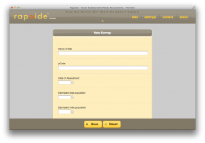
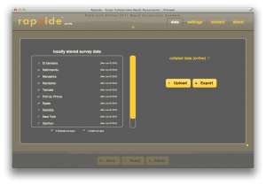
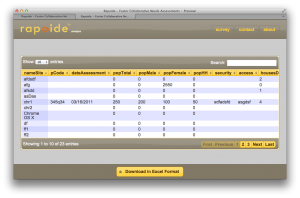

An Introduction to enketo
[updated: 1 Feb 2012]

At the beginning of last year, I spent a few months developing a survey application specifically meant for collaborative humanitarian needs assessments, e.g. amongst Clusters. The application is named ‘Rapaide’ – a combination of Rapide and Aide enketo. Its key advantage and the reason I decided to develop this offline-capable application is its speed. It allows for very quick deployment, efficient data entry, fast collation of data from different partners and realtime analysis. Users do not require fancy devices to enter data – a laptop or desktop with a modern browser will suffice (so better not Internet Explorer – you may notice that I mention that a lot…). The development work on this app will soon resume.

The project initially aimed to include 3 main components: an online form designer, an offline-capable data entry component and an online data analysis component. An all-in-one solution seemed the best at the time. However, I am currently re-evaluating this design. It may be better to focus on what distinguishes enketo from all the survey applications that are out there: its ability to enter data in a browser without an Internet connection (i.e. being able to launch offline and able to save data offline, see this earlier post). I am considering focusing on completing the data entry application and relying on existing services to design surveys and analyse data. This has the following advantages:

- Rarely is an application good at everything. It may be better to focus on one aspect and try to do this very well.
- There is a wide range of advanced data analysis tools available. Survey administrators using enketo will now be able to pick the most suitable for their purpose. The most appropriate tool may vary depending on the type of survey and available skills.
- The survey application could complement existing systems by replacing only the data entry component without replacing a whole system. For example, it could be deployed in an existing system that currently utilizes a data entry method or device that is not appropriate in a primary emergency or uses a cumbersome technology to deal with problematic Internet access.
- The application can stay very lean, which means fewer bugs, less maintenance, less testing and generally faster development.
- So far this has been a hobby but a potential way to monetize the application in the future could be to offer custom ‘hand-coded’ reports for fixed survey designs which would provide better reports than a flexible user-configured reporting tool could.
- Since I am developing the application by myself and there are limits to my available time, this leaner application could launch in 2012 instead of 2013, 2014….
The main features I am currently considering to include are:
- ability to import a form (design) created with a third-party tool (ideally one using a standard)
- ability to test launch a survey before launching it officially
- ability to enter survey data on any device with a modern browser, online and offline
- automatic uploading and collating of finalized data when the device is online
- ability to view the collated data and export this as a spreadsheet
- ability to link to an external web page on which reports are published

Development will re-start some time in February or March, depending on my other engagements. Data entry, collation and export (#3, #4 and #5) are mostly functioning at the moment (pre-alpha) with a fixed form. If you work for an international humanitarian aid agency and are interested in a demo, just let me know and I would be happy to set something up.
[Edit: Rapaide was replaced with enketo]